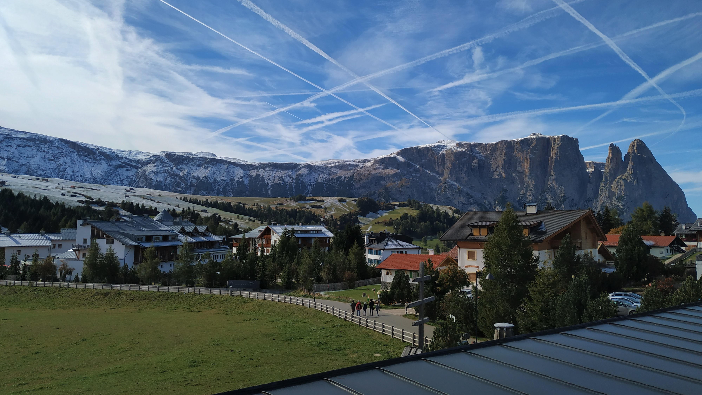

Fiè allo Sciliar
Fiè è un paesino ai piedi del più importante e famoso monte dell’Alto Adige, lo Sciliar.
Era l'estate 2018 quando decisi di accettare un lavoro stagionale da cameriere ad oltre 600km da casa. Per qualche motivo assurdo avevano notato il mio annuncio su un famoso sito, e in meno di dodici ore ho deciso di partire per un’avventura che ancora non sapevo quanto avrebbe significato per me.
Con vitto e alloggio e uno stipendio dignitoso mi sono quindi ritrovato in questo paesino con le insegne in tedesco e l’aria pulita di montagna, per nulla consapevole del fatto che ci sarei rimasto per quasi due anni.
Alpe di Siusi
Per essere pignoli, questa foto non è stata scattata a Fiè, bensì sull’alpe di Siusi, a pochi minuti da lì.
Questa visione di pace credo sia l’esperienza più turistica, in senso classico, che si possa fare se si decide di passare lì le proprie vacanze, e questo fa già capire molto.
Era la prima volta che salivo sull’Alpe, era estate e la neve era pressocché inesistente, ma il panorama toglieva davvero il respiro. Da quel giorno poi ci sarei tornato più volte, molte delle quali per sciare, ma è incredibile come questo gioiellino inizi a splendere davvero solo quando i cristalli di neve sono ormai tutti sciolti.
Laghetto di Fiè

Uno dei miei posti preferiti in assoluto era questo laghetto a una quarantina di minuti a piedi dal centro del paese. Ci andavo veramente spesso, che fosse estate per fare il bagno, inverno per pattinare, o più semplicemente per rilassarmi e fare qualche foto durante il disgelo.
Una birra del luogo e un asciugamano. Non serve davvero altro.
Peterbühl

Non c’è per me posto più significativo di questo.
Nei miei due anni
lì, credo non sia passata una sola giornata senza che mi andassi a
sedere su una panchina appena fuori quella piccola chiesetta.
Era davvero vicina al posto in cui lavoravo, quindi mi capitava spesso di andarci durante la pausa pomeridiana. In soli 5 minuti di cammino fra mucche libere di pascolare, si può godere di una vista stupenda sull’intero paese.
Con un libro in mano e qualche capretta curiosa che si avvicina, non c’è modo migliore di far sparire lo stress accumulato a contatto coi clienti.
Avevo una stanzetta all’ultimo piano dell’hotel con una finestrella davvero piccola, ma che incorniciava alla perfezione quell’altura. Nei miei ricordi sarà sempre un bellissimo quadro.